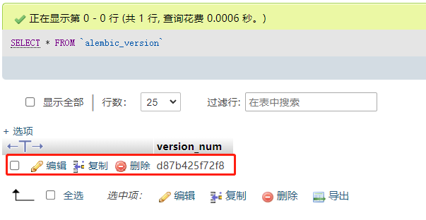

博客相关模型创建
在之前的章节中我们已经知道模型对应的其实就是数据库字段，通过这种方式创建数据库字段的方式主要依赖的是ORM系统，当然如果你对sql语法非常熟悉，完全可以不用ORM，但使用ORM的好处是有利于避免一些sql注入的风险，对sql不熟悉的同学比较友好，但略微会有性能损失，使用sql语句的话，如果你学的是一知半解，也容易写出一些性能不佳的语句，各有各的优点和不足，没有谁更好，具体眼看你自己的业务场景！
博客数据库字段规划
一个博客我们先从最简单的入手，博客分类、文章内容、文章标签，应该说拥有这三个基本的功能就算是一个非常简单的博客，那么我们就先从这三个功能入手，开始设计数据库字段！
博客分类模型（Category）
| 字段 | 类型 | 是否允许为空 | 说明 |
|---|---|---|---|
| id | int(11) | 否 | 主键 |
| name | varchar(128) | 否 | 分类名称 |
| icon | varchar(128) | 是 | 分类图标 |
| add_date | datetime | 否 | 添加时间 |
| pub_date | datetime | 否 | 更新时间 |
文章模型（Post）
| 字段 | 类型 | 是否允许为空 | 说明 |
|---|---|---|---|
| id | int(11) | 否 | 主键 |
| title | varchar(128) | 否 | 文章标题 |
| desc | varchar(200) | 是 | 文章简介 |
| has_type | enum('draft', 'show') | 否 | 文章类型（草稿, 发布） |
| category_id | int(11) | 否 | 归属分类id |
| content | longtext | 否 | 文章内容 |
| add_date | datetime | 否 | 添加时间 |
| pub_date | datetime | 否 | 更新时间 |
文章标签（Tag）
| 字段 | 类型 | 是否允许为空 | 说明 |
|---|---|---|---|
| id | int(11) | 否 | 主键 |
| name | varchar(128) | 否 | 分类名称 |
| add_date | datetime | 否 | 添加时间 |
| pub_date | datetime | 否 | 更新时间 |
文章与文章标签多对多关系（tags）
| 字段 | 类型 | 是否允许为空 | 说明 |
|---|---|---|---|
| tag_id | int(11) | 否 | 文章标签id |
| post_id | int(11) | 否 | 文章id |
规划好以上模型的字段后，就是去编写对应的模型类，这里有一些关系需要搞清楚，文章与文章分类是一对多的关系，一个分类下可以有多篇文章，而文章内容与标签之间的关系则是多对多的关系，一个标签可以对应多篇文章，多篇文章也可以对应某一个标签！
博客模型类创建
在app/blog/models.py文件中创建模型类，通过观察，我们发现每个模型都有一个相同的添加时间字段和更新时间字段，那么我们就可以把这两个字段提取到一个基类模型中，然后让所有的模型均继承这个基类模型即可，基类模型不会生成数据库字段，但继承他的模型会继承他里边的字段！
1、首先需要引入这些模块
from datetime import datetime
from RealProject import db
from enum import IntEnum
from sqlalchemy.dialects.mysql import LONGTEXT
2、创建基类模型BaseModel
class BaseModel(db.Model):
"""基类模型
"""
__abstract__ = True
add_date = db.Column(db.DateTime, nullable=False, default=datetime.utcnow, ) # 创建时间
pub_date = db.Column(db.DateTime, default=datetime.utcnow, onupdate=datetime.utcnow, nullable=False) # 更新时间
3、创建分类模型Category
class Category(BaseModel):
"""分类模型
"""
id = db.Column(db.Integer, primary_key=True)
name = db.Column(db.String(128), nullable=False)
icon = db.Column(db.String(128), nullable=True)
post = db.relationship('Post', backref='category', lazy=True)
def __repr__(self):
return '<Category %r>' % self.name
注意，db.relationship()函数用来创建关系，这是一个隐式字段，不会出现在数据库，但可以使用orm的查询语法查到所有关联的数据，外键字段还必须使用外键类来单独声明！
4、创建文章模型Post
class PostPublishType(IntEnum):
""" 文章发布类型
"""
draft = 1 # 草稿
show = 2 # 发布
# 多对多关系帮助器表
tags = db.Table('tags',
db.Column('tag_id', db.Integer, db.ForeignKey('tag.id'), primary_key=True),
db.Column('post_id', db.Integer, db.ForeignKey('post.id'), primary_key=True)
)
class Post(BaseModel):
"""文章模型
"""
id = db.Column(db.Integer, primary_key=True)
title = db.Column(db.String(128), nullable=False)
desc = db.Column(db.String(200), nullable=True)
has_type = db.Column(db.Enum(PostPublishType), server_default='show', nullable=False)
# 一对多关系
category_id = db.Column(db.Integer, db.ForeignKey('category.id'), nullable=False)
content = db.Column(LONGTEXT, nullable=False)
# 多对多关系
tags = db.relationship('Tag', secondary=tags, lazy='subquery', backref=db.backref('post', lazy=True))
def __repr__(self):
return f'<Post {self.title}>'
category_id字段的创建，它使用了db.ForeignKey()类实例化来创建了这个外键字段，这个会出现在数据库！这就是创建一对多关系字段的方法！
tags多对多关系则根据官方文档的建议是需要额外定义用于该关系的帮助器表，不建议使用模型，而是使用实际表！至于更详细的一些用法，我们可以参考其官方文档说明！
- 官方文档：https://flask-sqlalchemy.palletsprojects.com/en/2.x/
5、创建文章标签模型
class Tag(BaseModel):
""" 文章标签
"""
id = db.Column(db.Integer, primary_key=True)
name = db.Column(db.String(128), nullable=False)
def __repr__(self):
return f'<Tag {self.name}>'
创建完以上模型之后，就可以执行迁移命令，注意，别忘记设置环境变量！
flask db migrate
flask db upgrade
如果执行以上命令出现问题，可删除整个migrations文件夹，再去数据库删除alembic_version中的迁移记录，之后重新初始化迁移即可！
